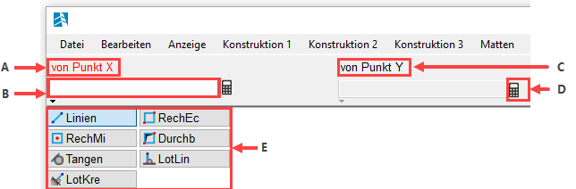
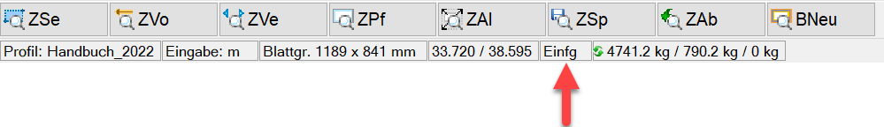
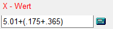
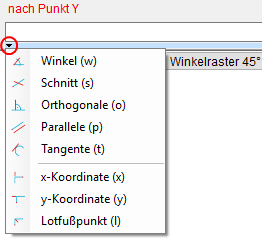

In ISBCAD gelangen Sie nach dem Aufruf einer Funktion in eine Abfrageroutine, die aus unterschiedlichen Eingabe- oder Auswahlfeldern besteht. ISBCAD führt Sie dabei schrittweise durch alle notwendigen Angaben, bis die Routine abgeschlossen ist. Danach gelangen Sie entweder wieder an den Startpunkt der Abfrageroutine oder zur nächsten Funktion. Wenn die Abfrageroutine abgeschlossen ist, wurde die Aktion durchgeführt und Sie können die Funktion erneut ausführen oder eine andere Funktion wählen.
Möchten Sie eine Abfrageroutine abbrechen, drücken Sie die Esc-Taste. Wenn Sie zur vorherigen Abfrage zurückkehren möchten, klicken Sie in der unteren Menüleiste die Funktion Bst an.
 |
A. Aktuelle Abfrage; B. Eingabefeld; C. Inaktive Abfrage; D. Rechnerfunktion; E. Konstruktionshilfen |
Abfragen
In der Abfragezeile werden die für die aktuell gewählte Funktion benötigten Eingaben abgefragt. Aktuelle Abfragen werden im Auslieferungszustand in roter Textfarbe dargestellt, z. B. [von Punkt X], und fordern jeweils zu einer Eingabe, Auswahl in der Zeichnung oder Bestätigung eines vorhandenen Wertes auf. Inaktive Abfragen kennzeichnen weitere erforderliche Angaben, die erst nach dem Bestätigen der aktuellen Abfrage aktiviert werden.
In den Systemdaten können Sie die Textfarbe und den Texthintergrund für verschiedene Programmelemente individuell anpassen.
Eingaben
Im Eingabefeld unterhalb einer Abfrage können die benötigten Daten eingegeben werden. Jede Eingabe muss mit der Eingabetaste oder per Rechtsklick (situationsabhängig) bestätigt werden. Eingaben zur Elementauswahl können meistens auch per Mausklick in der Zeichnung erfolgen. Zudem lassen sich die Ergebnisse der Funktion Messen mit einem Mausklick in das Eingabefeld übernehmen. Nach der Bestätigung wechselt das Programm automatisch zur nächsten Abfrage.
|
Tipp: |
|
Eingegebene Werte, wie z. B. ein Radius, eine Länge oder ein Text, bleiben bei einer nochmaligen Ausführung der Funktion erhalten. Dies hat den Vorteil, dass Sie Eingaben, die weiterhin gültig sind, mit Rechtsklick bestätigen können, um zur nächsten Abfrage zu gelangen. |

Elementkennung
Wenn Sie Zeichenelemente anklicken, z. B. den Endpunkt einer Linie, wird eine Buchstaben- und Zahlenkombination, die Elementkennung (z. B. E23) des angeklickten Punktes, in die Eingabe geschrieben. Dabei beschreibt der Buchstabe "E" den Endpunkt des Elements und die Zahl, dass es sich um das 23-igste gezeichnete Element handelt. Zu dem angeklickten Bezugspunkt können Sie mit dem Differenzmodus [Retan] einen Abstand zum Bezugspunkt eingeben.
Siehe auch: Elementfang; Differenzmodus
Eingabemodus
Überschreibmodus: Im Überschreibmodus ersetzt die Eingabe neuer Zeichen die bestehenden Zeichen rechts von der Einfügemarke.
Einfügemodus: Im Einfügemodus werden neue Zeichen links von der Einfügemarke eingesetzt.
Für beide Modi gilt: Sollten sich Zeichen rechts von der Einfügemarke befinden, werden diese nach dem Bestätigen entfernt. Wenn Sie die Einfügemarke per Mausklick oder mit der Ende-Taste an das Textende setzen, wird die komplette Eingabe übernommen.
Überschreib- oder Einfügemodus als Standard-Einstellung: In den Einstellungen können Sie mit der Option [Überschreibmodus verwenden] zwischen beiden Modi dauerhaft wechseln. Setzen Sie bei der Option einen Haken, um Texteingaben im Überschreibmodus zu beginnen. Ist der Haken nicht gesetzt (Auslieferungszustand), wird standardmäßig der Einfügemodus verwendet.
Mit der Tastaturtaste Einfg wechseln Sie temporär den Eingabemodus. Sie erkennen in der Statusleiste, ob der Einfüge- oder Überschreibmodus aktiv ist:
 |
Rechnerfunktion
 |
In Eingabefeldern mit können Rechenfunktionen (Grundrechenarten, Winkelfunktionen (im Bogenmaß) ausgeführt werden. Klammer- und Punkt vor Strich-Regeln werden berücksichtigt.
Symbol |
Operation |
+ |
Addition |
- |
Subtraktion |
* |
Multiplikation |
\ |
Division |
Hilfsfunktionen (Konstruktionshilfen)
Funktionen zur aktuellen Abfrage. Über das nach unten gerichtete Dreieck unterhalb des Eingabefeldes können Hilfsfunktionen durch das Anfahren mit dem Cursor aufgerufen und jeweils mit einem Klick auf die linke Maustaste in die Eingabe übernommen werden. Der Aufruf einer Hilfsfunktion ist durch Eintippen des entsprechenden Kürzels (w=Winkel, s=Schnittpunkt, o=Orthogonale usw.) ebenfalls möglich.
Siehe: Konstruktionshilfen
 |
Siehe auch: